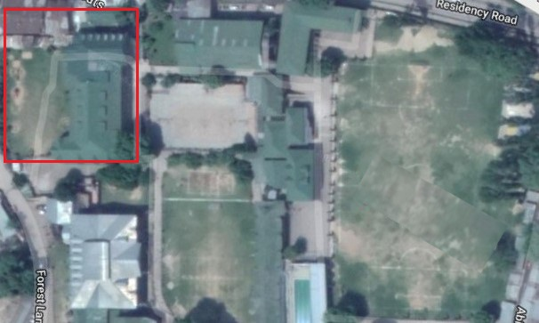

The school is divided into departments according to classes (or age groups). The schooling in Tyndale Biscoe starts from nursery upto 12th class, the journey being of 14 years. The classes that fall under the Lower Primary Department are nursery, KG, 1st and 2nd.
The location of the department is shown in the following map.
